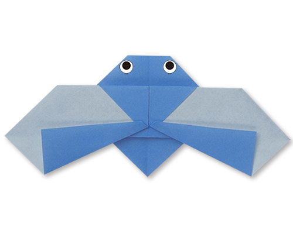

Origami Designs
Follow Us
About Us

Inetresting facts about Camel
- There are two types of camels: One humped or “dromedary” camels and two humped Bactrian camels.
- Camels have three sets of eyelids and two rows of eyelashes to keep sand out of their eyes.
- Camels have thick lips which let them forage for thorny plants other animals can't eat.

Inetresting facts about Chameleon
- ALMOST HALF OF ALL KNOWN SPECIES LIVE IN MADAGASCAR.
- CHAMELEONS VARY WILDLY IN TERMS OF SIZE.
- UNLIKE MANY LIZARDS, CHAMELEONS CAN'T REGROW THEIR TAILS.

Inetresting facts about Pigeon
>
- Pigeons are incredibly complex and intelligent animals.
- Pigeons are renowned for their outstanding navigational abilities.
- Pigeons are highly sociable animals.
.png)
Inetresting facts about Teddy Bear
- Teddy bears got their name from the story that Teddy Roosevelt refused to shoot a bear cub while on a hunting trip in 1902.
- The first toy stuffed bear was created by German toymaker Margarete Steiff. She created a soft plush with movable arms and legs and a friendly face after taking her nephew to the zoo in 1903.
- Washable teddy bears didn't appear until 1954 when the stuffing was switched to an easier to clean nylon fill. Before that, they were stuffed with mohair, wool, and other hard to clean fills.

Inetresting facts about Panda
- A giant panda is much bigger than your teddy bear.
- Giant pandas are good at climbing trees and can also swim.
- Pandas are "lazy" — eating and sleeping make their day.

Inetresting facts about Cicada
- Cicadas can survive a huge fall as babies, or nymphs.
- Females may be attracted to the sound of motors.
- Their short adult life is not unusual for bugs.